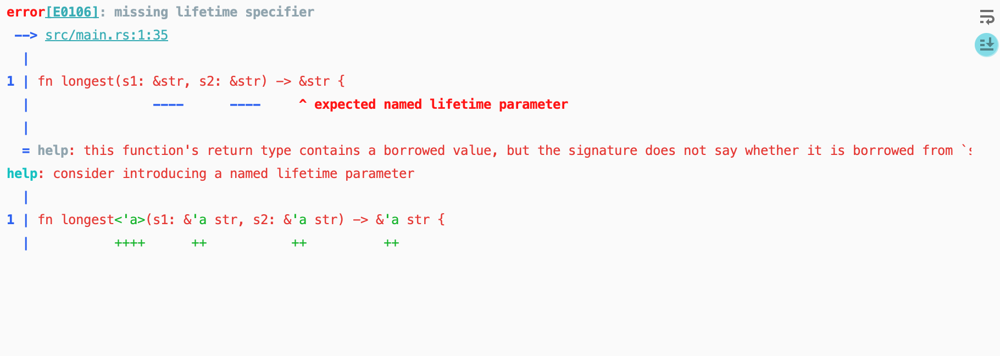
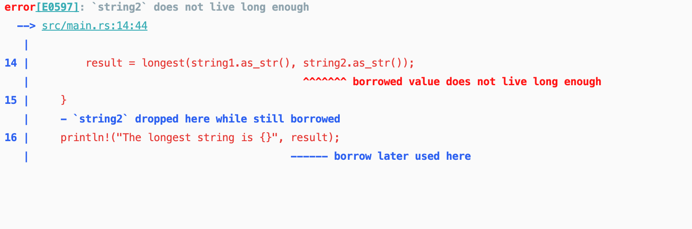

【Rust】生命周期
Rust 中的每一个引用都有其生命周期（lifetime），也就是引用保持有效的作用域。大部分时候生命周期是隐含并可以推断的，正如大部分时候类型也是可以推断的一样。但有些时候，Rust 需要我们使用泛型生命周期参数来注明他们的关系，这样就能确保运行时实际使用的引用绝对是有效的。

避免悬垂应用
rust 的编译器拥有一个借用检查器，通过比较作用域来确保所有的借用是否有效。如下的示例中，这段代码是不能工作的，'a 和 'b 被称作生命周期注解，很明显看出变量 r 的生命周期大于 x，那么如果在 x 生命周期结束的时候，r 依然保留对 x 的引用，就会引发程序异常，所以 rust 拒绝这段代码的编译，根据编译器的提示，因为变量 x 获得不够长，编译通过借用检查器，就能有效地避免悬垂指针。
生命周期注解语法
生命周期注解并不改变任何引用的生命周期的长短。与当函数签名中指定了泛型类型参数后就可以接受任何类型一样，当指定了泛型生命周期后函数也能接受任何生命周期的引用。生命周期注解描述了多个引用生命周期相互的关系，而不影响其生命周期。
生命周期注解有着一个不太常见的语法：生命周期参数名称必须以撇号（'）开头，其名称通常全是小写，类似于泛型其名称非常短。'a 是大多数人默认使用的名称。生命周期参数注解位于引用的 & 之后，并有一个空格来将引用类型与生命周期注解分隔开。
1 | &i32 // 引用 |
函数签名中的生命周期注解
来看个例子，编写一个函数，根据两个字符串的长度，返回较长的那一个，意想不到的是编译错误了，因为就这段代码来说，两个分支都有可能进入，但是rust要保证引用的有效性，就得比较两个参数的生命周期，他们的生命周期只有相同的时候才是有效的，rust 的编译器也提示我们添加生命周期注解：
1 | fn longest(s1: &str, s2: &str) -> &str { |

改进之后，给函数的参数添加生命周期注解之后，函数编译通过，我们指定两个参数 s1 和 s2 的生命周期是相同的：
1 | fn longest<'a>(s1: &'a str, s2: &'a str) -> &'a str { |
当我们传入的两个参数的生命周期不同的时候，因为 string2 没有 string1 活得长，当我们最后要打印的时候，string2 已经不存在了，所以编译器是会拒绝编译的。
1 | fn longest<'a>(s1: &'a str, s2: &'a str) -> &'a str { |

如果将打印位置放在 {} 内，是没有问题的，返回值的作用小于参数的作用域，result < string2 < string1。
结构体中的生命周期注解
结构体包含引用时，需要为结构体添加一个生命周期注解。这个结构体有一个字段，part，它存放了一个字符串 slice，这是一个引用。类似于泛型参数类型，必须在结构体名称后面的尖括号中添加泛型生命周期参数，以便在结构体定义中使用生命周期参数。这个注解意味着 ImportantExcerpt 的实例不能比其 part 字段中的引用存在的更久，也就是说ImportantExcerpt 的实例的生命周期范围小于part 字段中的引用。
1 | struct ImportantExcerpt<'a> { |
生命周期省略
每一个引用都有一个生命周期，我们需要为那些使用了引用的函数或结构体指定生命周期。但是如果每一个有引用参数的函数都需要声明参数周期，那将是惨绝人寰的编程体验。但是像下面这样的代码编译确实没有任何问题的：
1 | fn first_word(s: &str) -> &str { |
在早期版本（pre-1.0）的 Rust 中，这的确是不能编译的。每一个引用都必须有明确的生命周期。那时的函数签名将会写成这样：
fn first_word<'a>(s: &'a str) -> &'a str {
在rust开发团队编写了很多 rust 代码之后，发现总是重复地写着相同的生命周期注解，为了让生活更美好，抽象出了 生命周期省略规则（lifetime elision rules），只要我们编写的代码符合这些规则，就不用写生命周期注解了。
函数或方法的参数的生命周期被称为输入生命周期（input lifetimes），而返回值的生命周期被称为输出生命周期（output lifetimes）。编译器采用三条规则来判断引用何时不需要明确的注解。第一条规则适用于输入生命周期，后两条规则适用于输出生命周期。如果编译器检查完这三条规则后仍然存在没有计算出生命周期的引用，编译器将会停止并生成错误。这些规则适用于 fn 定义，以及 impl 块。
Rule1
每一个是引用的参数都有它自己的生命周期。换句话说就是，有一个引用参数的函数有一个生命周期参数：fn foo<'a>(x: &'a i32)，有两个引用参数的函数有两个不同的生命周期参数，fn foo<'a, 'b>(x: &'a i32, y: &'b i32)，依此类推。
Rule2
第二条规则是如果只有一个输入生命周期参数，那么它被赋予所有输出生命周期参数：fn foo<'a>(x: &'a i32) -> &'a i32。
Rule3
如果方法有多个输入生命周期参数并且其中一个参数是 &self 或 &mut self, 那么所有输出生命周期参数被赋予 self 的生命周期。这条规则使得方法更容易读写，因为只需更少的符号。
规则使用示例
对于我们本节开头的示例，我们应用规则1之后得到：
fn first_word<'a>(s: &'a str) -> &str {
接着我们应用规则2，这样编译器就能懂了，我们也就不用写了：
fn first_word<'a>(s: &'a str) -> &'a str {
但是对于比较字符串长度的函数：
fn longest(x: &str, y: &str) -> &str {
我们在应用规则1之后得到：
fn longest<'a, 'b>(x: &'a str, y: &'b str) -> &str {
但是在应用规则2的时候，发现不适用，这样对于输出参数的生命周期，编译器不能推断出来，只能报错，由开发者指定。
方法中的生命周期注解
当为带有生命周期的结构体实现方法时，其语法依然类似泛型类型参数的语法。声明和使用生命周期参数的位置依赖于生命周期参数是否同结构体字段或方法参数和返回值相关。
实现方法时结构体字段的生命周期必须总是在 impl 关键字之后声明并在结构体名称之后被使用，因为这些生命周期是结构体类型的一部分。
impl 块里的方法签名中，引用可能与结构体字段中的引用相关联，也可能是独立的。另外，生命周期省略规则也经常让我们无需在方法签名中使用生命周期注解。
如下示例，这里有一个方法 level。其唯一的参数是 self 的引用，而且返回值只是一个 i32，并不引用任何值：
1 | struct ImportantExcerpt<'a> { |
impl 之后和类型名称之后的生命周期参数是必要的，不过因为第一条生命周期规则我们并不必须标注 self 引用的生命周期。下面是一个适用于第三条生命周期省略规则的例子：
1 | struct ImportantExcerpt<'a> { |
这里有两个输入生命周期，所以 Rust 应用第一条生命周期省略规则并给予 &self 和 announcement 他们各自的生命周期。接着，因为其中一个参数是 &self，返回值类型被赋予了 &self 的生命周期，这样所有的生命周期都被计算出来了。
静态生命周期
这里有一种特殊的生命周期值得讨论：'static，其生命周期能够存活于整个程序期间。所有的字符串字面值都拥有 'static 生命周期，我们也可以选择像下面这样标注出来：
1 | let s: &'static str = "I have a static lifetime."; |
这个字符串的文本被直接储存在程序的二进制文件中而这个文件总是可用的。因此所有的字符串字面值都是 'static 的。
结合泛型参数、Trait Bound
如下是一个在同一函数中指定泛型类型参数、trait bounds 和生命周期的语法：
1 | use std::fmt::Display; |
HRTB (higher ranked trait bounds)
HRTB，中文名为高阶生命周期参数，可以用来实现动态生命周期，举几个例子说明情况。
示例一
假如我们有下面这样的示例：
第一次调用 f(&x) 时生命周期 'a 等于变量 x 的生命周期；而在第二次调用 f(&y) 时，生命周期 'a 又等于了变量 y 的生命周期；而变量 x 和变量 y 的生命周期显然是不同的。因此无法用一个静态的生命周期来描述 'a ，我们希望的是，闭包 f 在具体调用时绑定具体的生命周期，比如调用 f(&x) 时绑定的是 x 的生命周期，而调用 f(&y) 时绑定的是 y 的生命周期。
1 | fn foo<'a>(f: Box<dyn Fn(&'a i32)>) { |
这里我们使用 for<'b> Fn(&'b i32) 表示 f 参数的声明周期应该在具体调用的时候和它的入参绑定：
1 | fn foo(f: Box<dyn for<'b> Fn(&'b i32)>) { |
示例二
这里不能运行的原因是，我们传入 b.do_sth 的生命周期太短了，'a 的生命周期要求是和 main 函数中 &2usize 生命周期一样长：
1 | use std::fmt::Debug; |
1 | use std::fmt::Debug; |
示例三
对于下面的闭包 f，编译器不能直接推断出它的生命周期如何，因为没有声明周期参数，返回的 x 引用可能是局部变量的：
1 | fn main() { |
由于我们无法直接对 f 的参数使用生命周期参数，所以退而求其次，我们限定 f 的生命周期在其调用的时候和它的参数绑定就可以了：
1 | fn generate<F>(f: F) -> F |
或者我们使用下面的方式定义 generate 函数也是可以的，限定传入 F 的参数和返回值都具有相同的生命周期 'a：
1 | fn generate<'a, T: 'a, F>(f: F) -> F |
示例四
1 | use rand; |